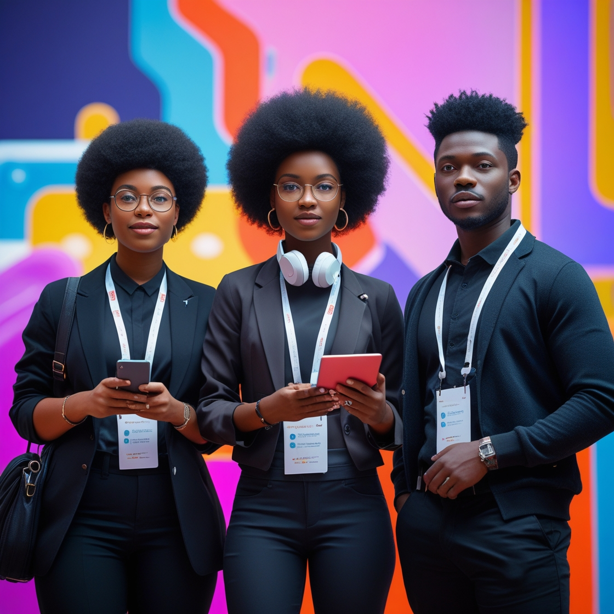
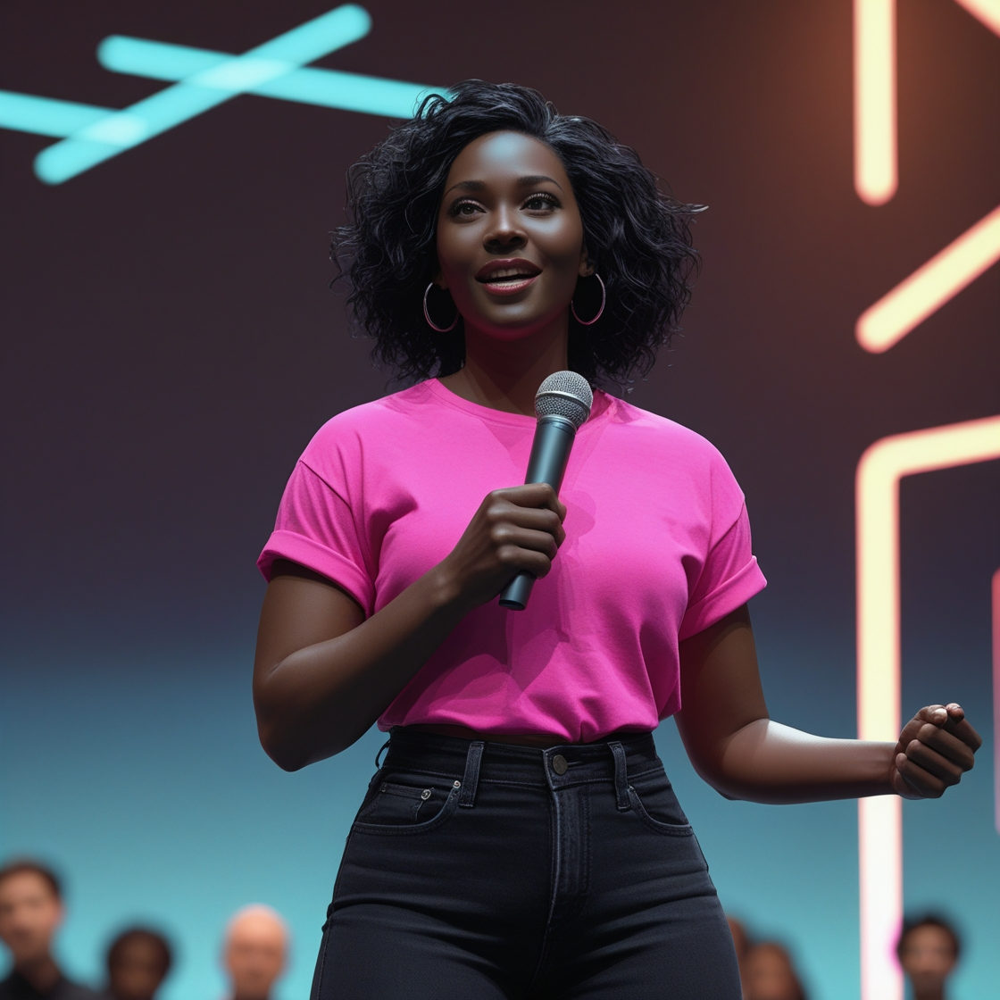

Our History
TechCon began over a decade ago as a small gathering of developers passionate about the future of technology. Since then, it has grown into a global event attracting innovators, engineers, and creatives from around the world.
TechCon began over a decade ago as a small gathering of developers passionate about the future of technology. Since then, it has grown into a global event attracting innovators, engineers, and creatives from around the world.
TechCon exists to connect the brightest minds in tech, promote cutting-edge innovation, and empower the next generation of leaders in technology. We believe in diversity, inclusion, and the transformative power of knowledge-sharing.
AI Researcher and CTO of FutureTech, Amara has revolutionized machine learning accessibility for underrepresented communities.
Blockchain innovator and founder of DeFiChain, Jamal has led efforts in decentralized finance education and adoption globally.
Tech educator and activist, Sophie founded Code4Change, bringing coding literacy to rural schools worldwide.